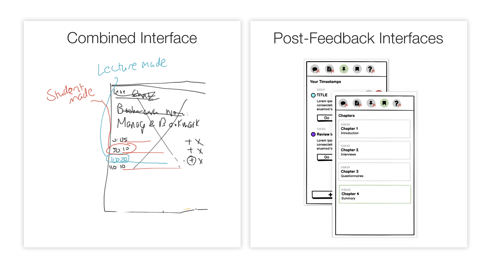

Building a Better Lecture Streaming Interface
Designing an online learning interface for humans, not robots.A hallmark of 2020 was remote learning, and with it, the humble lecture streaming service. Previously a convenience for students too busy or, more likely, too lazy to attend their lectures in person, they have now become a requirement to learning in 2021. There’s just one problem: they all kind of suck.
That’s not to say they don’t do their job. They just don’t do it well.
As a part of the Human Interaction course at UNSW, I spent time designing a lecture streaming platform UI as a part of a group project. We distilled our own frustrations with current offerings, in turn creating a service that is not only more inuitive and efficient, but is actually fun to use.
Philosophy
First things first: what actually sucks about current lecture offerings? At UNSW, like many other unis, we use a system called Echo365. They’re all typically designed like libraries: a big list of recordings, categorised by course. It’s great if you’re a fan of navigating page after page and remembering specific dates for each of your lectures. Unfortunately, most of us are human, and don’t like that.
Ick. Talk about engaging.
So, the solution was simple: put the user at the center of the design process. Think about how a user wants to navigate the service, and consider student needs from the beginning.
We wanted a service that was the antithesis to the status quo: fun to use, engaging, and efficient. Without sounding too cliche, we wanted to make the “Netflix of lectures.” Make it easier to find what you’re looking for at a glance, don’t present endless lists to the user, and put everything in one place to help even the most unorganised student keep up.
But what do the users want?
We considered ourselves as primary users, and worked from there. By the start of the course, all of us had been used to using services like Echo360, TheBox, YouTube, Moodle, Teams, Zoom, and more, to have our lecture content delivered for the greater part of a year. We had our frustraitons, and we began to think about how to solve them.
First and foremost, the actual presentation on competing services is kind of terrible. Echo360, for example, shows lectures in a grid, with very little visual distinction. It doesn’t even show you the date they were added, nor sort in any sort of recognisable way (by week, by date, by topic).
Quick! Find me the second lecture in Week 5.
Discoverability, efficiency, and ease of use are paramount. No student wants to spend precious time browsing the website for their lectures like they’re looking for a movie to watch. Help them find the most relevant content easily, and focus on the experience once they’re there.
We also considered that our own needs might be a bit different to these of other student types - we were all students taking extra classes over the summer, after all. To personify these users, we created a few different personas.
-
Jenny, the underachiever: Jenny is a full time student who cares about passing. Often behind in her classes, she often only watches lectures bit-by-bit, and thus needs help remembering where she’s up to, easy access finding her most relevant lectures, and ways to allow her to speed up her consumption.
-
Xavier, the overachiever: Xavier wants supercharged features. Playing every lecture live, he wants to be able to note where to come back to for revision later, the ability to ask questions, and a way to access his notes in the lecture platform.
-
Dylan, the part-time student: Dylan takes an internship, so he’s engaged, but has little time. He needs features to ensure he can maximise the time he spends on the platform.
Our three personas, personified!
Features & Feedback
With our intrepid trio of Jenny, Xavier, and Dylan in hand, we imagined their varying needs and defined some basic functional requirements for our service, beyond typical player features (like playback speed, play/pause, etc). I’ll summarise them in more natural language below…
- A timestamping feature that allows either lecturers or students to define points within a lecture playback, and a UI to enable quickly jumping to them. Each timestamp should have some information, like a description and a title.
- Notes associated with a lecture are accessible from within the player alongside the relevant recording. This minimises the amount of time spent searching for content, supercharging the player.
- The home page features a quick section to jump to live lectures, upcoming lectures, and in-progress recordings that the student is currently watching.
- The home page also has ways of accessing the recordings/live streams per-course.
- Students can ask the lecturer questions in real-time, either under their name or anonymously. Lecturers can also respond to the questions in a thread.
We began imaginging how our features might look when implemented. Here, the idea of a “toolbar” with the timestamp panel is presented. Note that we experimented with both lecturer and student timestamps.
We ran a set of interviews with undergraduate students at and outside of UNSW. We ran a bunch of statistical analysis on this. I’m going to skip over the details, and highlight a few interesting insights that changed how our product was going to be designed.
We asked students whether they would find making their own timestamped bookmarks or lecturers making bookmarks in a lecture more useful. Surprisingly, an overwhelming majority of students said that both features would be as useful as the other to them. This shifted our thinking; how can we design a product that better serves both of these functionalities?
Otherwise, we found that most students agreed with our original vision of the product, confirming the accuracy of our personas in representing eventual user needs. Other insights were given, including:
- The students we asked most often watch lectures in full, but at a time that is convenient to them. We needed to create a great way to watch past lectures in an organised, accessible, and efficient way.
- Self described “low-performing” students were more likely to cram at the end of a term, watching parts of a lecture. Our timestamping features would become important to these students, saving time and increasing efficiency in accessing and revising content.
- Most students thought that lecture offerings were slow, bulky, and unengaging - they wanted a more accessible platform; many describing wanting a platform like Twitch or YouTube.
Our Paper Prototype
With our feedback in hand, our feature set ready to go, and our users in mind, we began designing the lecture service we would have all loved in 2020. I’ll focus on areas of the UI I primarily designed, and touch on the experience that was created and contributed to by the rest of the group. To visualise our UI, we created low fidelity paper prototypes.
We didn’t develop these any further into more functional prototypes, but the experience is communicated clearly with the use of these sketches.
The Player
The player is the area where most time will be spent on the service - after all, the whole purpose of this platform is to stream lectures. So, it was very important to get this right.
The player is separated into two distinct groupings, based on functionality. We’ll call these the stream, and the toolbox.
The player in a currently live lecture
First up, we wanted to make it clear where the user is. Taking inspiration from paradigms like those in iOS, the back arrow indicates where you’ll return to if you click on it. We inform the user of their context directly, and always give them control and ability to exit. We also make the title of the lecture clear, as well as the fact that it is currently live.
The toolbox is the super-powerful, multi-purpose area to access everything related to a lecture. When a student enters the service, they’re presented with a Live Q&A box. We wanted to give access to all important functions, without taking the user too far out of the lecture itself.
While the lecture is live, we present the user with Q&A, Course Materials, and Timestamps.
All three views in the Live Player Toolbox.
In course resources, we imagined an easy way to associated lecture content to the lecture itself, increasing efficiency and effectiveness of the service for students who no longer needed to search around for their notes.
We also worked with student-made timestamps. We associate a time-stamp to a dot on the timeline in the stream, so it’s easy to jump into each section of the lecture in the player. This mapping helps reduce cognitive load, and also makes for a more intutitive tool. We also considered impairments such as colour blindness, and designed an option to change the colour scheme, or use different shapes (not pictured).
Finally, Q&A takes inspiration from Microsoft Teams, but shows a chronoligcally ordered time-synced view of questions being asked, and can be viewed after the fact. We also allow students to post anonymously, so that there isn’t any hesitation to ask questions.
Home & Navigation
We also considered ways to make navigation flow easier and more intutive. In platforms like Echo360, lists are prominent, and not much visual distinction is created. To reduce the need to recall information, we present thumbnails, as well as differentiating each course by colour - again, reducing cognitive load in finding class-specific lectures.
We also wanted to speed up the ability to find course resources, so we created a specific course-page that grouped both resources, as well as previous classes. This helps reduce search for our students who were short on time, and needed a quick and light interaction to find and watch specific course content.
We also took student wellness into consideration, and designed an interface that encouraged users to take a break, especially after watching content for an unhealthy amount of time. We utilised a dark pattern of reducing the affordance given to the skip button (by making it look less like a button), further incentivising students to step back and take the break.
Working from User Feedback
In building this project, we kept in mind the user at every stage. While there are plenty more features we designed to cater to specific needs of our user personas, I wanted to highlight a specific feature that went through a few iterations throughout our design process.
Originally, we imagined a way for students and lecturers to create timestamps in one place. We realised that this might be confusing, and “muddy the waters” with unrelated functionality in one user interface. To introduce constraints and thus make the interface more effective, we decided to ask our sample group: would you rather timestamp your own points in a video, or let a lecturer do it?
Interestingly, most of the students who had participated in our questionnaire identified that both features were as important as each other. This indicated to us that our user’s needs should be met with two individual interfaces, not just one.
To achieve this, we created two separate interfaces, one of which allows users to create timestamps in the live player, and the other that imagines a system in which lecturers can create “chapters”. Chapters only appears in the lecture playback, introducing a constraint and reducing errors on behalf of the user.

Our original imagined single interface and our seperated interface giving more importance to both distinct functionalities post feedback.
Finally, in our real-world usability testing, in which we gave students a set of tasks to complete using our prototype interface, we found that most students were able to navigate and operate the respective interfaces efficiently. A few minor suggestions were made, such as changing the iconography, or giving a more distinct grouping to timestamps, which could be improved upon in a further iteration.
Conclusion
So, what did we learn? During this project, we built a lecture platform of our (and many other students’) dreams. We looked at the current offerings, identified what made them great, and what made them suck, and from that, built a set of basic requirements. We imagined users of our platform, and shaped our workflows around what they’d want to achieve, placing the users at the center of our design process.
We asked our potential userbase what they’d want in a questionnaire, and gained feedback about what they wanted - in many cases, our personas and our own opinions aligned with our users! And in a few others, we had a chance to learn and improve the interface.
Finally, we built a paper prototype, and gave it to our users to try and achieve a set of tasks with it. We found that most users were able to navigate the service with ease, and only had minor issues.
A more important take-away from this than this quick recap is that user centered design helps designers consider the needs of the user at each step, and build with the intentions of the user in mind. What do our users want? How can we help them best achieve that?
An iterative approach, like the one briefly touched upon here, helps designers identify problems early on, and correct them. It also assists in creating interfaces that are efficient, intutitve, and easy to use.
A massive thanks to my group for building this project with me throughout the summer term. It was grueling and involved many 3am nights of reading and analysing data, designing, and giving iterative feedback. I like to think it was worth it!